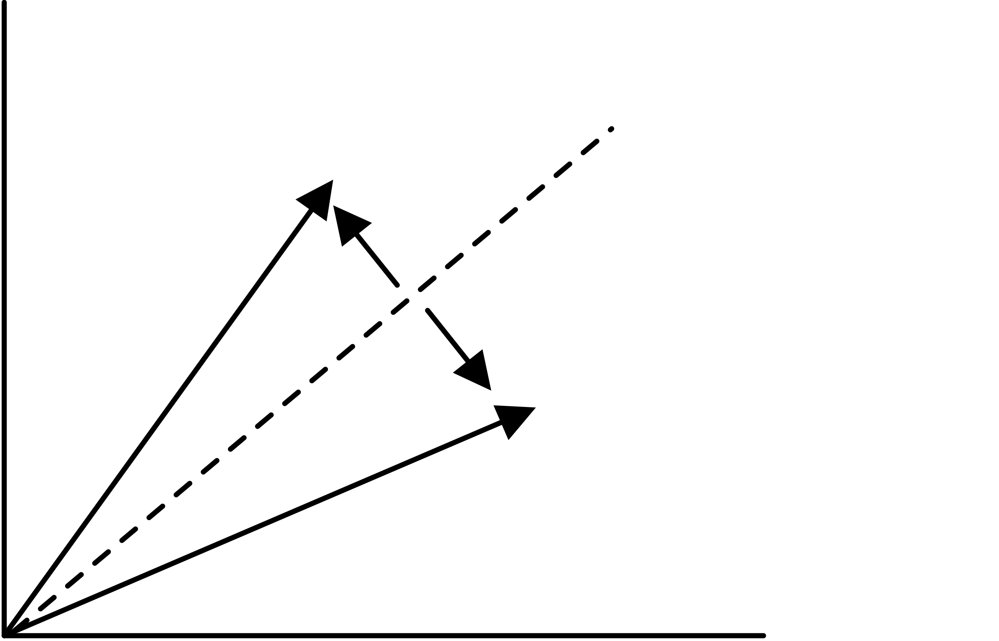

In this course it is assumed that you know what a matrix and a vector are, simple algorithms such as how to multiply them, and some properties such as invertibility of a matrix. This appendix introduces some concepts and theorems that are not typically part of a first course in linear algebra.
A norm is a way to generalize the concept of absolute value to multi-dimensional objects such as vectors and matrices. There are many ways of defining a norm, and there is theory of how different norms relate. Here we only give the basic definitions; for more detail see any linear algebra textbook, for instance~ [golo83] .
crumb trail: > norms > Norms > Vector norms
A norm is any function $n(\cdot)$ on a vector space $V$ with the following properties:
For any $p\geq1$, the following defines a vector norm: \[ |x|_p = \sqrt{\sum_i|x_i|^p}. \] Common norms are $\|\cdot\|_1$ (`sum of absolute values') and $\|\cdot\|_2$ (`square root of sum of squares'); the $\|\cdot\|_\infty$ norm is defined as $\lim_{p\rightarrow\infty}\|\cdot\|_p$, and it is not hard to see that this equals \[ \|x\|_\infty=\max_i |x_i|. \]
crumb trail: > norms > Norms > Matrix norms
By considering a matrix of size~$n$ as a vector of length $n^2$, we can define the Frobenius matrix norm: \[ \|A\|_F=\sqrt{\sum_{i,j}|a_{ij}|^2}. \] However, we will mostly look at associated matrix norms : \[ \|A\|_p=\sup_{\|x\|_p=1}\|Ax\|_p= \sup_x\frac{\|Ax\|_p}{\|x\|_p}. \] From their definition, it then follows that \[ \|Ax\|\leq\|A\|\|x\| \] for associated norms.
The following are easy to derive:
By observing that $\|A\|_2=\sup_{\|x\|_2=1} x^tA^tAx$, it is not hard to derive that $\|A\|_2$ is the maximal singular value of~$A$, which is the root of the maximal eigenvalue of~$A^tA$.
The matrix condition number is defined as \[ \kappa(A)=\|A\|\,\|A\inv\|. \] In the symmetric case, and using the 2-norm, this is the ratio between the largest and smallest eigenvalue.
crumb trail: > norms > Gram-Schmidt orthogonalization
The GS algorithm takes a series of vectors and inductively orthogonalizes them. This can be used to turn an arbitrary basis of a vector space into an orthogonal basis; it can also be viewed as transforming a matrix $A$ into one with orthogonal columns. If $Q$ has orthogonal columns, $Q^tQ$ is diagonal, which is often a convenient property to have.
The basic principle of the GS algorithm can be demonstrated with two vectors~$u,v$. Suppose we want a vector $v'$ so that $u,v$ and $u,v'$ span the same space, but $v'\perp u$. For this we let \[ v'\leftarrow v-\frac{u^tv}{u^tu}u. \] It is easy to see that this satisfies the requirements.
Suppose we have an set of vectors $u_1,\ldots,u_n$ that we want to orthogonalize. We do this by successive applications of the above transformation:
For $i=1,\ldots,n$:
For $j=1,\ldots i-1$:
let $c_{ji}=u_j^tu_i/u_j^tu_j$
For $i=1,\ldots,n$:
update $u_i\leftarrow u_i-u_jc_{ji}$
Often the vector $v$ in the algorithm above is normalized; this adds a line
$u_i\leftarrow u_i/\|u_i\|$
to the algorithm. GS orthogonalization with this normalization, applied to a matrix, is also known as the QR factorization .
Suppose that we apply the GS algorithm to the columns of a rectangular matrix~$A$, giving a matrix~$Q$. Prove that there is an upper triangular matrix~$R$ such that $A=QR$. (Hint: look at the $c_{ji}$ coefficients above.) If we normalize the orthogonal vector in the algorithm above, $Q$~has the additional property that $Q^tQ=I$. Prove this too.The GS algorithm as given above computes the desired result, but only in exact arithmetic. A~computer implementation can be quite inaccurate if the angle between $v$ and one of the $u_i$ is small. In that case, the MGS algorithm will perform better:
For $i=1,\ldots,n$:
For $j=1,\ldots i-1$:
let $c_{ji}=u_j^tu_i/u_j^tu_j$
update $u_i\leftarrow u_i-u_jc_{ji}$
To contrast it with MGS , the original GS algorithm is also known as CGS .
As an illustration of the difference between the two methods, consider the matrix \[ A= \begin{pmatrix} 1&1&1\\ \epsilon&0&0\\ 0&\epsilon&0\\ 0&0&\epsilon \end{pmatrix} \] where $\epsilon$ is of the order of the machine precision, so that $1+\epsilon^2=\nobreak1$ in machine arithmetic. The CGS method proceeds as follows:
It is easy to see that $q_2$ and $q_3$ are not orthogonal at all. By contrast, the MGS method differs in the last step:
crumb trail: > norms > The power method
The vector sequence \[ x_i = Ax_{i-1}, \] where $x_0$ is some starting vector, is called the method} since it computes the product of subsequent matrix powers times a vector: \[ x_i = A^ix_0. \] There are cases where the relation between the $x_i$ vectors is simple. For instance, if $x_0$ is an eigenvector of~$A$, we have for some scalar~$\lambda$ \[ Ax_0=\lambda x_0 \qquad\hbox{and}\qquad x_i=\lambda^i x_0. \] However, for an arbitrary vector $x_0$, the sequence $\{x_i\}_i$ is likely to consist of independent vectors. Up to a point.
Let $A$ and $x$ be the $n\times n$ matrix and dimension~$n$ vector \[ A = \begin{pmatrix} 1&1\\ &1&1\\ &&\ddots&\ddots\\ &&&1&1\\&&&&1 \end{pmatrix} ,\qquad x = (0,\ldots,0,1)^t. \] Show that the sequence $[x,Ax,\ldots,A^ix]$ is an independent set for $i
Now consider the matrix $B$:
\[
B=\left(
\begin{array}{cccc|cccc}
1&1&&\\ &\ddots&\ddots&\\ &&1&1\\ &&&1\\ \hline
&&&&1&1\\ &&&&&\ddots&\ddots\\ &&&&&&1&1\\ &&&&&&&1
\end{array}
\right),\qquad
y = (0,\ldots,0,1)^t
\]
Show that the set $[y,By,\ldots,B^iy]$ is an independent set for
$i
While in general the vectors $x,Ax,A^2x,\ldots$ can be expected to be
independent, in computer arithmetic this story is no longer so clear.
Suppose the matrix has eigenvalues $\lambda_0>\lambda_1\geq\cdots
\lambda_{n-1}$ and corresponding eigenvectors~$u_i$ so that
\[
Au_i=\lambda_i u_i.
\]
Let the vector~$x$ be written as
\[
x=c_0u_0+\cdots +c_{n-1}u_{n-1},
\]
then
\[
A^ix = c_0\lambda_0^iu_i+\cdots +c_{n-1}\lambda_{n-1}^iu_{n-1}.
\]
If we write this as
\[
A^ix = \lambda_0^i\left[
c_0u_i+c_1\left(\frac{\lambda_1}{\lambda_0}\right)^i+
\cdots +c_{n-1}\left(\frac{\lambda_{n-1}}{\lambda_0}\right)^i
\right],
\]
we see that, numerically, $A^ix$ will get progressively closer
to a multiple of~$u_0$, the
dominant eigenvector
. Hence,
any calculation that uses independence of the $A^ix$ vectors is likely
to be inaccurate.
crumb trail: > norms > Nonnegative matrices; Perron vectors
If $A$ is a nonnegative matrix, the maximal eigenvalue has the
property that its eigenvector is nonnegative: this is the the
Perron-Frobenius theorem
.
13.4 Nonnegative matrices; Perron vectors
crumb trail: > norms > The Gershgorin theorem
Finding the eigenvalues of a matrix is usually complicated. However, there are some tools to estimate eigenvalues. In this section you will see a theorem that, in some circumstances, can give useful information on eigenvalues.
Let $A$ be a square matrix, and $x,\lambda$ an eigenpair: $Ax=\lambda x$. Looking at one component, we have \[ a_{ii}x_i+\sum_{j\not=i} a_{ij}x_j=\lambda x_i. \] Taking norms: \[ (a_{ii}-\lambda) \leq \sum_{j\not=i} |a_{ij}| \left|\frac{x_j}{x_i}\right| \] Taking the value of~$i$ for which $|x_i|$ is maximal, we find \[ (a_{ii}-\lambda) \leq \sum_{j\not=i} |a_{ij}|. \] This statement can be interpreted as follows:
The eigenvalue $\lambda$ is located in the circle around~$a_{ii}$ with radius $\sum_{j\not=i}|a_{ij}|$.Since we do not know for which value of~$i$ $|x_i|$ is maximal, we can only say that there is some value of~$i$ such that $\lambda$ lies in such a circle. This is the Gershgorin theorem.
Let $A$ be a square matrix, and let $D_i$ be the circle with center $a_{ii}$ and radius $\sum_{j\not=i}|a_{ij}|$, then the eigenvalues are contained in the union of circles~$\cup_i D_i$.We can conclude that the eigenvalues are in the interior of these discs, if the constant vector is not an eigenvector.
crumb trail: > norms > Householder reflectors
In some contexts the question comes up how to transform one subspace into another. Householder reflectors a unit vector~$u$, and let \[ H= I-2uu^t. \] For this matrix we have $Hu=-u$, and if $u\perp v$, then $Hv=v$. In other words, the subspace of multiples of~$u$ is flipped, and the orthogonal subspace stays invariant.
Now for the original problem of mapping one space into another. Let the original space be spanned by a vector~$x$ and the resulting by~$y$, then note that \[ \begin{cases} x = (x+y)/2 + (x-y)/2\\ y = (x+y)/2 - (x-y)/2 \end{cases} \]
FIGURE 13.1: Householder reflector
In other words, we can map $x$ into~$y$ with the reflector based on $u=(x-y)/2$.
We can generalize Householder reflectors to a form \[ H=I-2uv^t. \] The matrices $L_i$ used in LU factorization (see section~ 5.3 ) can then be seen to be of the form $L_i = I-\ell_ie_i^t$ where $e_i$~has a single one in the $i$-th location, and $\ell_i$~only has nonzero below that location. That form also makes it easy to see that $L_i\inv = I+\ell_ie_i^t$: \[ (I-uv^t)(I+uv^t) = I-uv^tuv^t = 0 \] if $v^tu=0$.